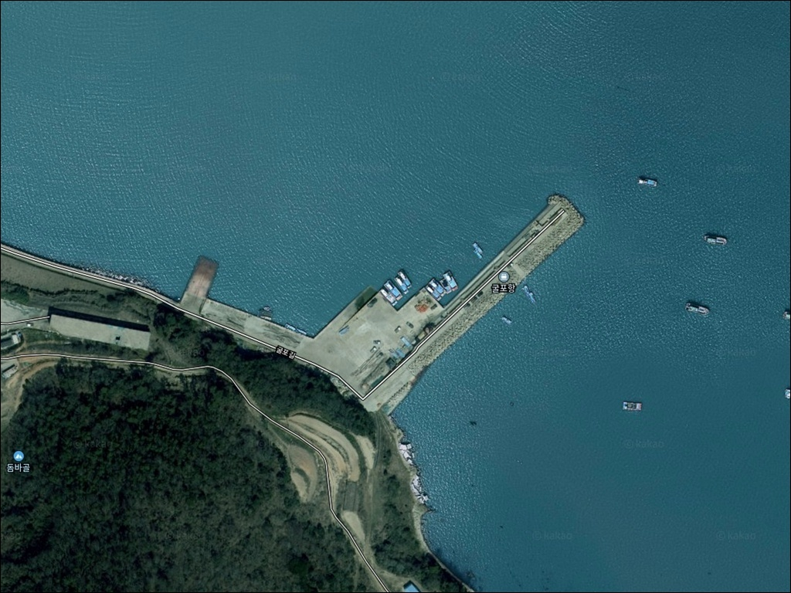
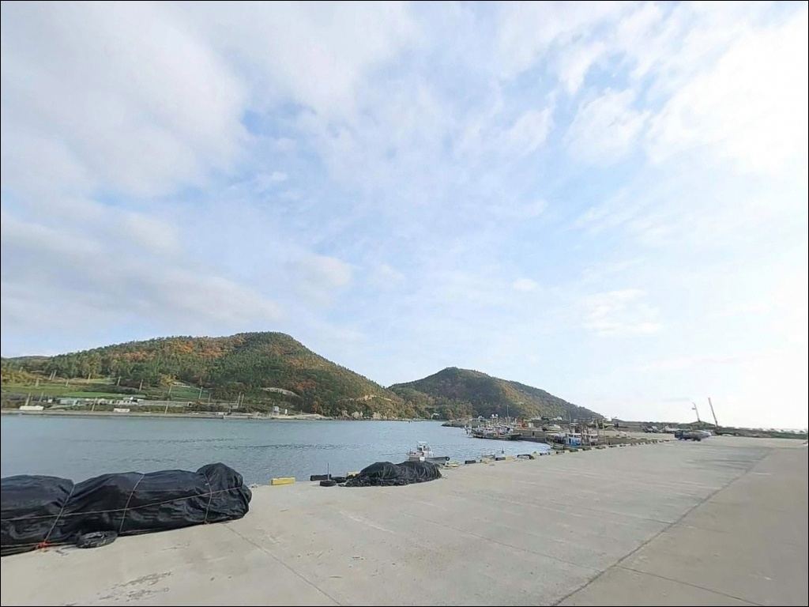
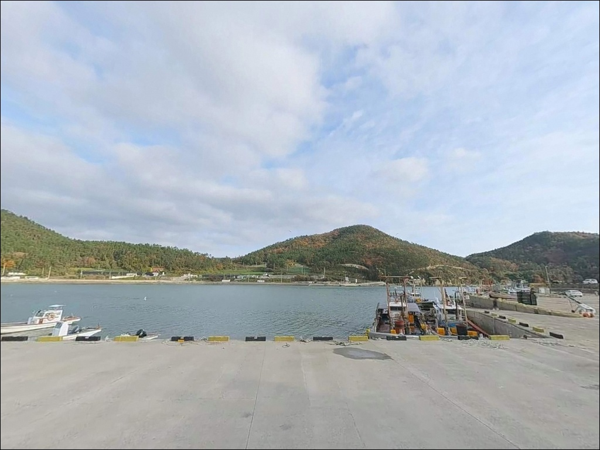
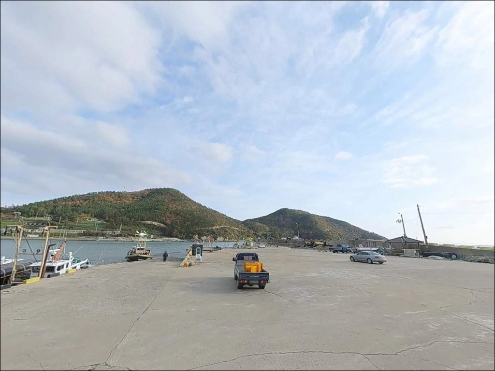
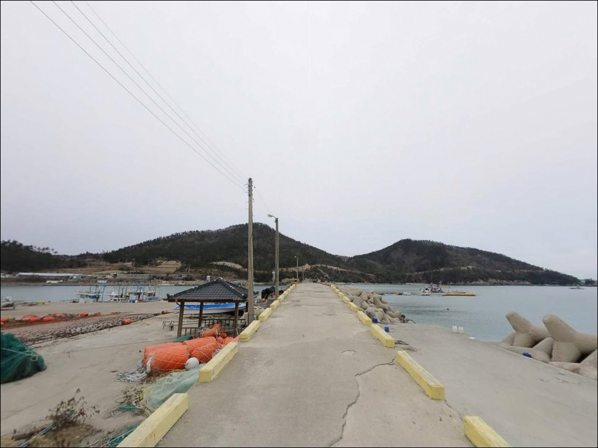
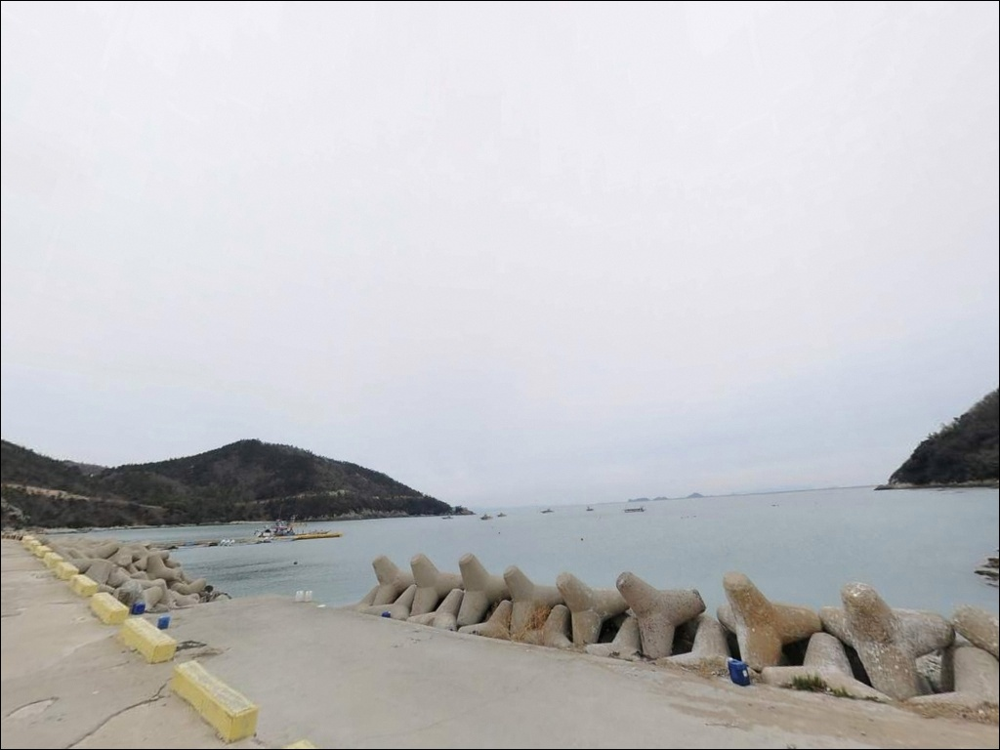
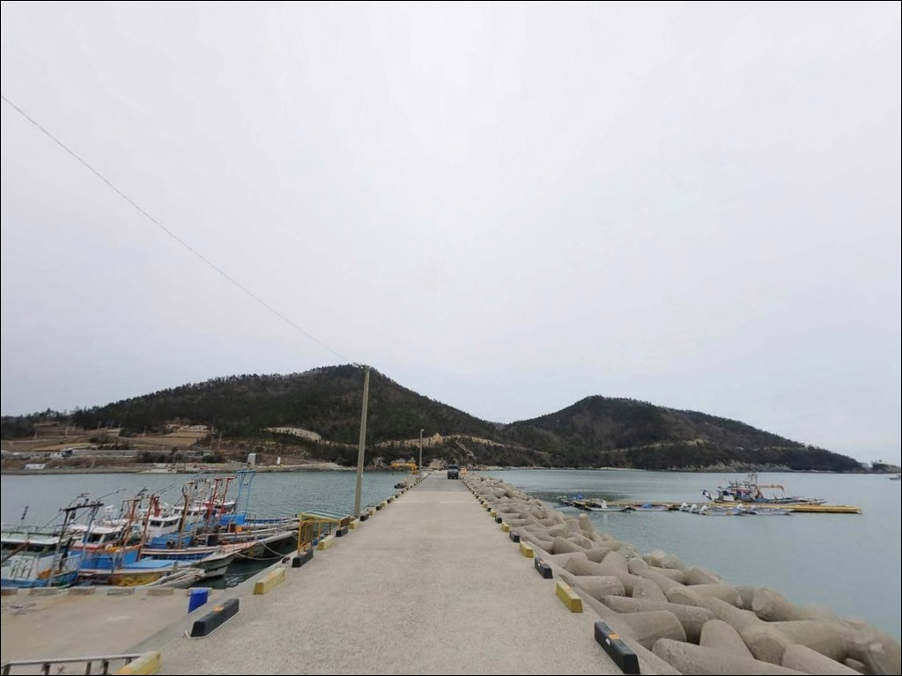
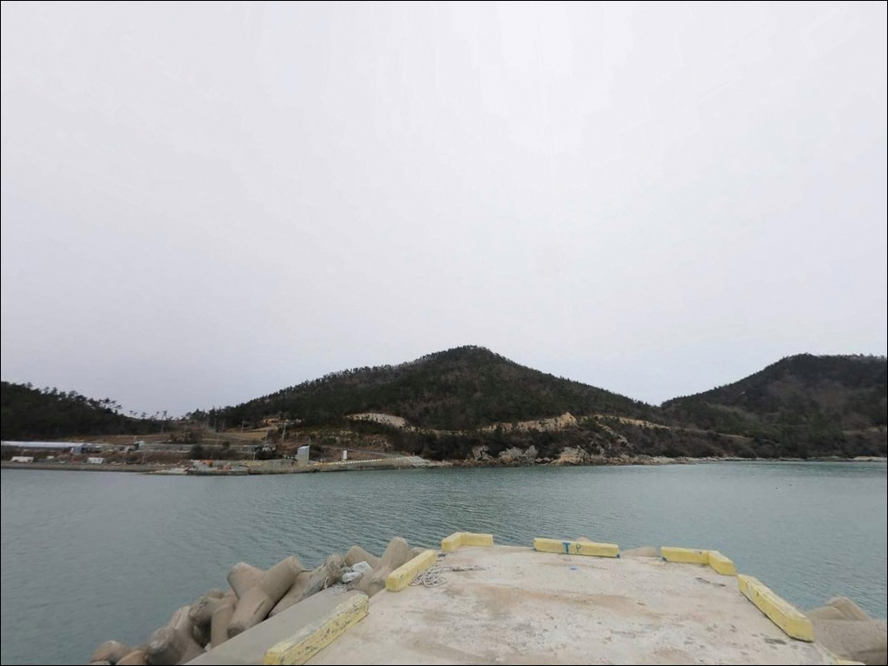
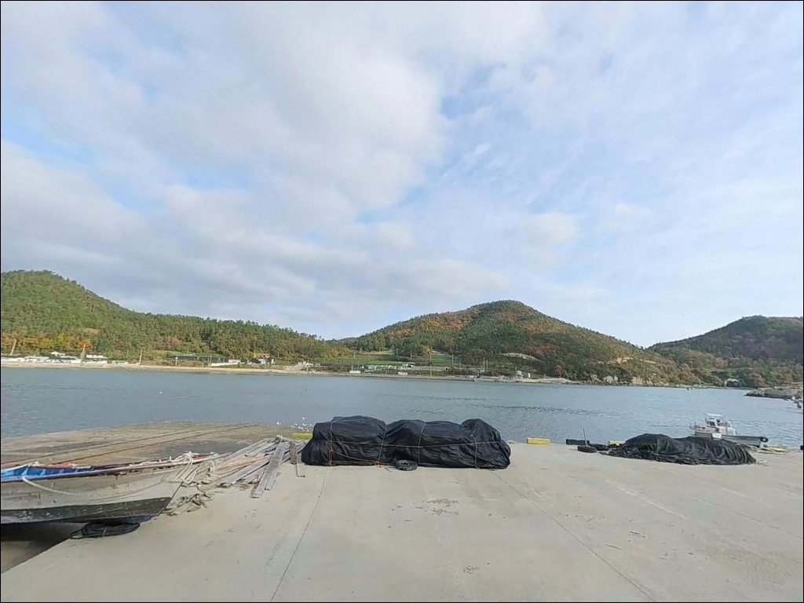

이 페이지에는 광고(제휴 링크 포함)가 있으며, 광고 링크를 통해 구매하면 운영자가 판매 수익 또는 수수료를 받을 수 있습니다. 포인트 사진: 카카오맵 스카이뷰·로드뷰. 이 페이지의 지도·사진 이미지는 카카오맵의 실제 서비스 이미지와 다를 수 있습니다.

굴포항(굴포방파제)
전남 진도군 임회면 굴포리 96-12
물때 확인 없이 굴포항에 진입하면,
수심이 0~1.7m에 불과한 이 포인트에서는
간조 전후로 낚시 자리 자체가 줄어드는
상황을 맞닥뜨립니다.
저질이 암반으로 이루어진 방파제 구조라,
타이밍을 놓치면 채비를 던져도
밑걸림 외에 기대할 것이 없습니다.
이 글은
굴포항의 진입 환경, 지형 기반 낚시 여건,
물때 판단 기준, 낚시 스타일 조건에 집중합니다.
특정 어종 보장이나 조황 단정은
이 글의 범위에 포함되지 않습니다.
1978년 지방어항으로 지정된 굴포항은
방파제 208m, 물양장 115m, 선착장 117m 규모로 조성된
소규모 항구입니다.
양쪽이 산으로 둘러싸인 깊은 만 안쪽에 자리해
외해 파도의 영향을 덜 받는 내만형 구조이며,
방파제 끝단(등대 포인트) 외측이
주요 낚시 자리로 알려져 있습니다.

굴포항은 임회면 소재지에서
지방도를 따라 굴포리 방향으로 내려오다
마을 안길로 진입하는 구조입니다.
마을 안길을 통과해야 항구에 닿는 방식이라
진입로 폭이 넉넉하지 않은 구간이 포함됩니다.
승용차나 소형 캠핑카 기준으로 진입이 가능한 수준이며,
대형 차량이라면 출발 전 위성지도로
진입로를 먼저 살펴두는 것이 안전합니다.
주차 후보는 선착장 앞 공터와
방파제 입구 주변입니다.
어선 하역 및 작업 동선과 겹칠 수 있어,
주차 후 동선을 막지 않는 자리를
현장에서 먼저 확인하는 것이 기본 매너입니다.
회차는 선착장 평지에서 가능성이 있으나,
대형 차량의 경우 여유 공간이 제한적인 편입니다.
항구로 이어지는 도로는
진도 미르길 4코스(굴포 트레킹길)와 연결되며,
항구 인근까지 포장도로가 이어져 있습니다.
방파제 등대 조명이 있어
야간 접근성은 비교적 양호한 편입니다.

굴포항은 산으로 막힌 깊은 만 안쪽 구조라
외해 바람에 비해 항내는
상대적으로 바람 영향이 적은 편입니다.
굴포리는 70여 세대 규모의 소규모 어촌 마을로,
야간 차량 통행이 드물어
조용한 환경을 기대할 수 있습니다.
다만 민가와 가까운 소규모 항구 특성상
야간 소음과 조명 관리는 기본 매너입니다.
가로등은 일부 존재하지만,
전체적으로 어두운 구간이 있어
개인 조명 장비는 필수입니다.
차박이란 차량을 숙박 공간으로 활용하며
현장에서 하룻밤 머무는 여행 방식이지만,
굴포항에서는 낚시를 마치고 조용히 머무는 보조 개념으로
접근하는 것이 현실적입니다.
주차 공간이 넉넉하지 않아
사전 공간 확인이 필요하며,
차박을 메인 목적으로 삼을 경우
주차 여건이 더 안정적인 인근 항구나
국립진도자연휴양림 숙박을
베이스캠프 대안으로 먼저 검토하는 편이 좋습니다.

굴포항 반경 3km 이내에
편의점이나 마트 등 확인된 생활 인프라가 없습니다.
식수·연료·낚시 소품·비상약품 모두
출발 전에 갖춰야 하는 완전 자급 체제가
현실적인 준비 방식입니다.
굴포리 마을 인근에는
복탕 전문 식당인 굴포 식당이 있습니다.
졸복탕 단일 메뉴로 운영되며,
주차 공간이 갖춰진 것으로 알려져 있어
낚시 전후 식사 장소로 활용 가능합니다.
영업 여부는 방문 전 확인이 필요합니다.
항구 북측 산지에는
국립진도자연휴양림이 있습니다.
숙박·주차·화장실 등 편의시설을 갖춘
공식 휴양 시설로,
굴포항 낚시 시 베이스캠프로 활용하거나
응급 상황 발생을 대비한
거점 시설로 사전에 파악해 두면 좋습니다.

굴포항 방문 전 가장 먼저 확인할 것은 물때입니다.
수심이 0~1.7m로 전반적으로 얕아,
물때를 맞추지 않으면
낚시 자리가 줄어드는 구조입니다.
바다타임에서 굴포항 기준 물때를 확인하고,
초들물~중날물 타이밍에 맞춰
입장 시각을 계획하는 것이 기본 전략입니다.
저질이 암반으로 이루어진 구간이 많아
채비 손실이 잦을 수 있습니다.
여분 채비와 봉돌을 넉넉히 준비하고,
기상 변화도 사전에 확인해야 합니다.
만 안쪽이라도 기상에 따라 바람 방향이 달라질 수 있어
당일 아침 기상청 예보를 다시 확인하는 편이 좋습니다.
마을 선착장 구조상
어선 조업 공간과 인접해 있습니다.
어선 이동 동선과 어구에 접촉하지 않도록
자리를 잡는 것이 기본 매너이며,
야간 낚시 시에는 구명조끼와 헤드랜턴을 반드시 착용해야 합니다.
쓰레기는 모두 가져가는 것이 원칙입니다.

굴포항의 핵심 지형 조건은 내만 구조입니다.
산으로 둘러싸인 깊은 만 안에 항구가 자리한 형태라
외해 파도가 직접 닿지 않는
안정적인 수면 조건을 갖추고 있습니다.
방파제 208m가 외측을 막아주어
내항은 잔잔하고 외항으로 갈수록
조류 영향이 커지는 패턴입니다.
수심은 전반적으로 0~1.7m 수준으로 얕으며,
방파제 끝단으로 갈수록
수심이 급변하는 구간이 형성됩니다.
저질은 암반이 주를 이루어
밑걸림을 의식한 채비 운용이 필요합니다.
조류는 진도 북부 울돌목 인근에 비해
상대적으로 약한 편에 속합니다.
내만형 구조로 파도 영향이 적어 안정적인 낚시 여건을
갖추고 있지만, 수심이 얕은 만큼
물때 의존도가 높은 포인트입니다.
방파제 외항 방향에서 날물 조류를 활용하는 타이밍,
방파제 끝단 테트라포드 외측과
선착장 외항 쪽이 수심이 가장 확보되는 구간입니다.
출조 전에 굴포항 최신 조황은
꼭 검색해 보시기 바랍니다.

감성돔 찌낚시가 이 포인트에서
가장 잘 알려진 낚시 방식입니다.
방파제 외항 쪽 테트라포드 바깥을 향해
초들물 조류를 태워 20~30m 구간을 흘려주는 패턴이
이 포인트 구조에 잘 맞습니다.
찌낚시는 내만형 방파제에서 가장 안정적으로
수심층을 탐색할 수 있는 스타일이며,
수심 3~5m 구간이 확보되는
방파제 끝단 외측이 핵심 자리입니다.
원투낚시도 이 포인트 구조에 맞는 방식입니다.
방파제 끝단이나 외항 쪽에서
붕장어를 노리는 야간 대기형 낚시가 어울리며,
조류가 느려지는 정조 전후보다
물이 움직이는 타이밍에 채비를 멀리 보내는 방식이
이 포인트의 바닥 지형에 적합합니다.
단, 암반 저질로 채비 손실 가능성이 있어
여분 채비 준비는 필수입니다.
루어낚시는 암반 지형에서
우럭·노래미 계열을 노리는 방식으로
시도해볼 수 있습니다.
지그헤드 채비로 층을 나눠 탐색하는 방식이
암반 지형에 어울리며,
만 입구 방향으로 가볍게 탐색하는 연안 공략이
이 포인트에서 루어의 활용 형태입니다.
진도 해역은 계절에 따라 감성돔, 우럭, 노래미, 붕장어 등을
기대해볼 수 있는 서남해 내만 권역에 속합니다.

굴포항 조류나 수심 여건이 맞지 않을 때,
첫 번째 대안은 귀성항선착 맞은편 갯바위입니다.
약 1.9km 거리로 굴포항과 같은 내만 계열이지만,
바람과 조류 조건이 조금 달라
당일 현장 상황에 따라 번갈아 볼 수 있는 선택지입니다.
동계선착장(약 2.8km)도 같은 방향의 대안으로,
굴포항에서 차량으로 5~10분 내 닿을 수 있습니다.
조류와 수심 조건을 더 확보하고 싶다면,
남동마을 방파제와 맞은편 갯바위(약 5.1km)가
다음 선택지입니다.
굴포항보다 외해에 더 노출된 위치라
조류를 더 살리고 싶을 때 이동을 고려할 수 있는
방파제·갯바위 복합 구조 포인트입니다.
진도 임회면권 낚시의 거점 항구인
서망항(약 7.1km)이 가장 안정적인 대안입니다.
북측 방파제가 낚시 포인트로 알려져 있으며,
낚싯배 출항 거점이기도 합니다.
굴포항이 여의치 않을 때
서망항 방파제로 이동하는 동선이
이 권역에서 가장 효율적입니다.

찌낚시나 원투낚시를 즐기는 낚시인이라면
굴포항의 내만형 방파제 구조는
안정적인 여건을 갖추고 있습니다.
파도 영향이 적고 조류가 비교적 완만한 편이라
채비 컨트롤 부담이 덜한 환경이지만,
수심이 얕아 물때 판단이 조과의 전부를 결정하는
포인트입니다.
바다타임에서 초들물~중날물 타이밍을 먼저 확인하고
이동하는 것이 출조의 전제 조건입니다.
편의시설을 기대하거나 장기 차박을 계획한다면
굴포항 단독보다는
국립진도자연휴양림을 베이스캠프로 삼고
낮에 낚시를 병행하는 방식이 현실적입니다.
좁은 진입로와 한정된 주차 공간을 미리 파악하고,
물때에 맞게 움직인다면
조용한 어촌 분위기 속에서
낚시와 차박을 자연스럽게 엮을 수 있는
포인트입니다.